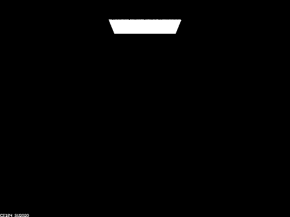

Overview
In this project, we successfully developed extensions to the Diffuse material from project 3-1, specifically
focusing on Mirror and Glass Materials in Part 1, and an advanced version of the pinhole camera model with the
implementation of Depth of Field using the thin-lens model in Part 4. For the Mirror and Glass Materials, our work
included the incorporation of reflection, mirror material, refraction, and glass material. This implementation
closely followed the instructions, graphical representations of refraction, and equations provided in the project
specifications. A significant challenge we faced was in determining the correct pdf value for the
RefractionBSDF::sample_f function. We overcame this by referencing the MirrorBSDF::sample_f function and
accordingly setting the pdf to 1.
In developing the Depth of Field feature, we concentrated on generating rays for a Thin Lens, adhering to the
thin-lens model diagram and the part 4 specifications. We encountered a challenge where the images rendered were
blurred, even with the correct focal distance. The issue was traced back to our approach in handling the ray's
origin; we had mistakenly used pos as the ray’s origin instead of performing the camera-to-world transformation
for the origin starting from pLens. We resolved this by calculating c2w * pLens + pos to correctly set the ray’s
origin.
Part 1. Mirror and Glass Materials
Show a sequence of six images of scene `CBspheres.dae` rendered with `max_ray_depth` set to 0, 1, 2, 3, 4, 5, and 100. The other settings should be at least 64 samples per pixel and 4 samples per light. Make sure to include all screenshots.
The images are rendered with 64 samples per pixel and 4 samples per light.
|

|

|

|

|

|

|

|
Point out the new multibounce effects that appear in each image.
At max_ray_depth = 0, the scene is predominantly black, with only the area light source visible.
At max_ray_depth = 1, the two spheres appear black, each featuring specular highlights at the top. Overall, the
scene exhibits a certain level of brightness.
At max_ray_depth = 2, the left sphere displays reflections, while the right sphere remains black with specular
highlights on top and a tiny reflection. The ceiling is dark, but the scene is brighter compared to max_ray_depth
= 1.
At max_ray_depth = 3, the left sphere shows reflections, and the right sphere has a small reflection and exhibits
refraction. The ceiling becomes brighter, and the overall scene is more luminous than at max_ray_depth = 2.
At max_ray_depth = 4, both spheres show improved reflections, with the left sphere being noticeably brighter than
at max_ray_depth = 3. The right sphere's refraction is more pronounced, and the entire scene is brighter than the
previous depth.
At max_ray_depth = 5, the reflections on both spheres are well-defined, and the brightness levels increase further
for both the spheres and the overall scene, surpassing the illumination at max_ray_depth = 4.
At max_ray_depth = 100, the scene reaches its peak brightness. Both spheres are well-lit with distinct reflections
and refraction effects, each brighter than at max_ray_depth = 5. The ceiling and overall scene display a
significant increase in brightness from previous depths.
Explain how these bounce numbers relate to the particular effects that appear. Make sure to include all screenshots.
Zero Bounce Illumination: Here, light travels directly to the camera without any interaction with scene objects.
As a result, the scene is predominantly black, except for the visible area light source.
One Bounce Illumination: In this scenario, light reaches the camera after bouncing once off objects in the scene.
The specular highlights on the spheres are a direct consequence of this single bounce. Light from the area light
source reflects off the sphere before being captured by the camera.
Two Bounce Illumination: Light now reaches the camera after two interactions with scene objects. Some light
bounces once in the scene and again off the left sphere, while a smaller amount reflects similarly off the right
sphere. Consequently, the left sphere shows reflections, and the right sphere has a faint reflection.
Three Bounce Illumination: With three bounces, light interacts more complexly within the scene. It bounces off the
ceiling and then twice off the left sphere (once upon entering and once upon exiting), brightening the ceiling
area above the left sphere. Similarly, light bounces off a wall and twice through the right sphere, resulting in
its refraction.
Four Bounce Illumination: At this level, light bounces four times within the scene. It reflects off the wall,
enters and exits the right sphere, bounces off the left sphere, and then reaches the camera. This sequence
brightens the reflection of the right sphere in the left sphere.
Five Bounce Illumination: Five bounces offer more path possibilities for the light emanating from the area light
source. This increased interaction transfers energy to more objects, enhancing indirect illumination and overall
scene brightness.
One Hundred Bounce Illumination: With a hundred bounces, the light from the area source undergoes ninety-five more
interactions compared to five-bounce illumination, creating a multitude of path combinations. However, as energy
dissipates over these numerous bounces, the contribution of higher bounce levels decreases exponentially.
Therefore, while the scene is slightly brighter than in five-bounce illumination, there is an upper limit to this
increase in brightness.
Part 4. Depth of Field
For these subparts, we recommend using a microfacet BSDF scene to show off the cool out of focus effects you can get with depth of field!In a few sentences, explain the differences between a pinhole camera model and a thin-lens camera model.
In the pinhole camera model, everything within the frame is in sharp focus. Rays are projected from the origin (0,
0, 0) towards a specific direction (X, Y, -1). The focal plane is positioned at z = -1. The point on the image
plane that receives radiance, denoted as pFilm, is located at (-X, -Y, 1). Each ray emanating from the plane of
focus traverses through the center of the pinhole and strikes the image plane, ensuring a clear and focused image.
Conversely, in the thin-lens camera model, objects are in focus only when they lie within a plane at the focal
distance from the lens. This model incorporates an aperture, introducing the depth of field effect. Consequently,
the point pFilm does not solely receive radiance from the origin. It can also capture radiance from any point
across the thin lens. By uniformly sampling the lens, which is an aperture with a radius of lensRadius, we obtain
a sampled point on the lens, pLens, at coordinates (sx, sy, 0). Rays passing directly through the center of the
thin lens maintain their direction unaltered. Moreover, rays originating from the same point on the focal plane
are consistently converged to the same point pFilm on the image plane, irrespective of their path through the
lens.
Show a "focus stack" where you focus at 4 visibly different depths through a scene. Make sure to include all screenshots.

|

|

|

|
Show a sequence of 4 pictures with visibly different aperture sizes, all focused at the same point in a scene. Make sure to include all screenshots.

|

|

|

|